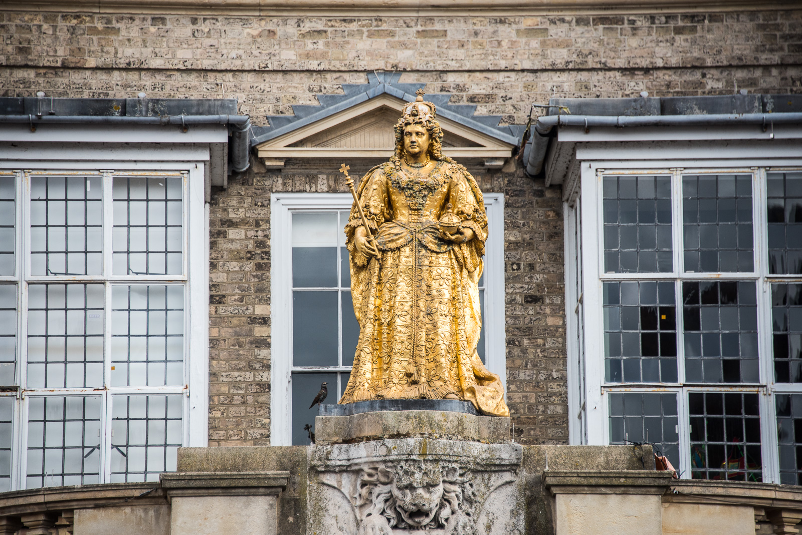
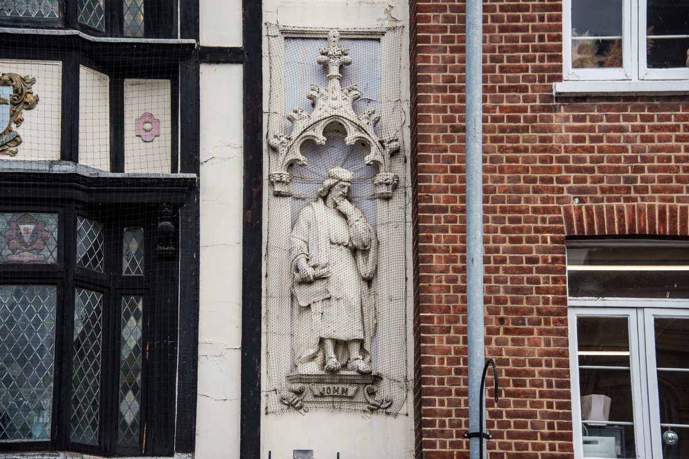
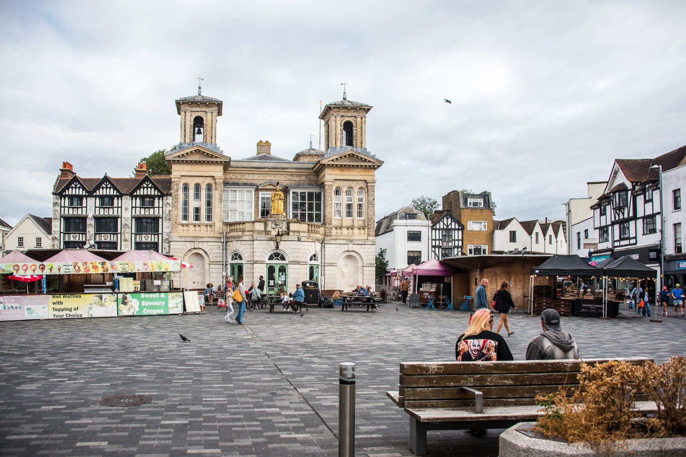
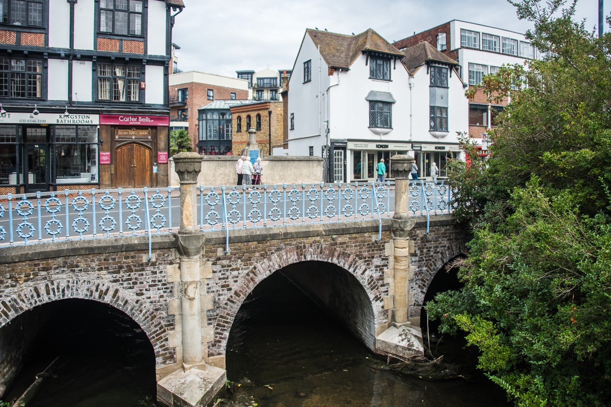
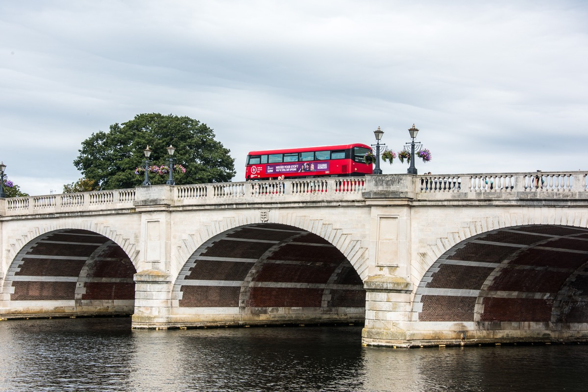
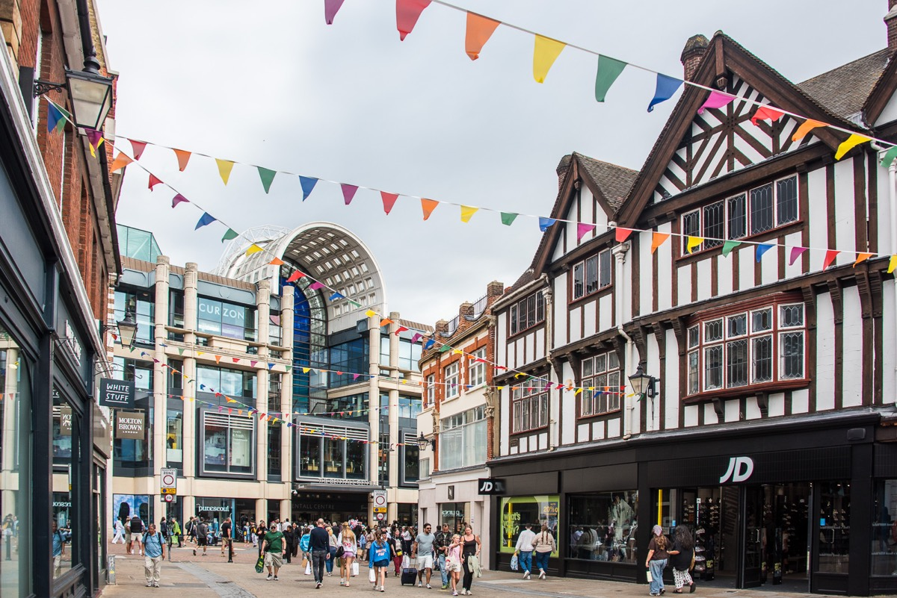
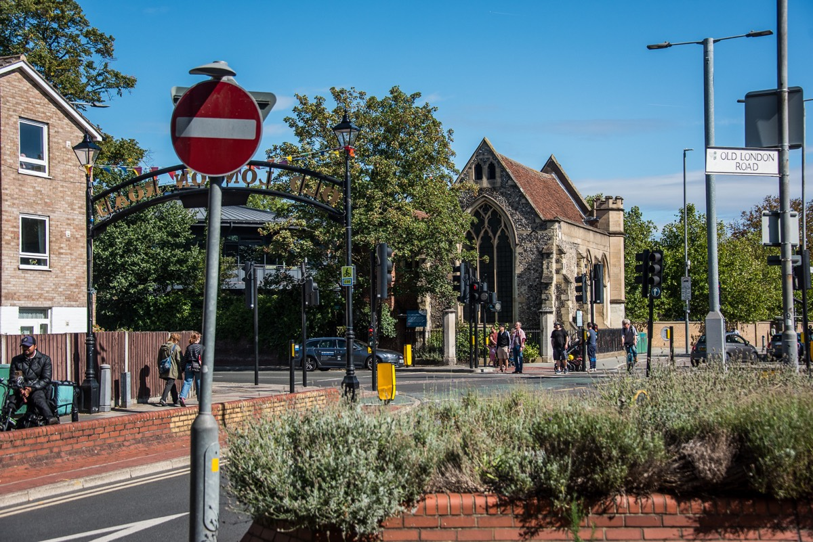

Five Thousand Years
by the Ford
The guides put Kingston's first settlement at some five thousand years old, and whatever the precise figure, the reason people stopped here is not in doubt: the river. Kingston sits at the point where the tidal Thames meets the point at which the tide turns — the furthest place upstream where, at low water, you could once wade or ford across. There was no bridge here for centuries; travellers simply waited for the tide.
The ground underfoot has changed more than the buildings suggest. The Thames here was once far wider and shallower than today, splitting into a scatter of low, marshy islands. The largest of these islands is where the town's parish church now stands — which is also, according to tradition, where Saxon kings once knelt to be crowned.
The Church &
the Lost Saxon Chapel
The present church stands on the site of a Saxon chapel, built on the largest of the old river islands. In the 1130s, work began on the Norman church that forms the core of the building seen today — heavily restored by the Victorians, and weathered in places because much of the stone was quarried locally rather than imported.
The church originally had a spire, carried on a brick tower. It came down in a great storm during the reign of Queen Anne — almost certainly the Great Storm of 1703, one of the most destructive storms in recorded English history, which brought down church spires and roofs across the country. Kingston's was never rebuilt.
According to a story the guides tell on this stretch of the walk, the Saxon chapel survived for centuries as an annexe to the main church — until 1730, when it had become so dilapidated that it collapsed while a grave was being dug in its south-west corner. The sexton, his assistant and his daughter were buried in the fall. Only the daughter survived.
The tale goes that she went on to take over her father's position — an unusual outcome for a role that normally passed down the male line, and one the guides offer as local tradition rather than documented fact. A portrait said to be of her is reputed to survive in a local collection.
The chapel's collapse in 1730 is independently documented; what is also well attested is that a large stone block was recovered from the ruins soon afterwards — and it is this block, not the church itself, that the next stop on the walk is about.
"You'll be wondering what happened to the Saxon chapel — because I told you that's where the Saxon kings were crowned."
The Stone &
the Seven Kings
The Coronation Stone is an ancient sarsen block — the same type of stone used at Stonehenge — traditionally said to be the seat on which seven Anglo-Saxon kings were crowned. Two of those coronations are documented with reasonable confidence: Æthelstan in 925, the first king to rule a genuinely unified England, and Æthelred the Unready in 979. A third, Eadred in 946, is thought likely. The remaining four — Edward the Elder, Edmund, Eadwig and Edward the Martyr — rest on weaker or later tradition.
The stone was recovered from the ruins of the collapsed Saxon chapel in 1730 and later used, rather less reverently, as a mounting block for horses at the market. In 1850 it was given a formal setting — a heptagonal plinth with the kings' names and coronation dates picked out in lead — and displayed in the marketplace. It was moved to its current position beside the Guildhall in 1935.
"We've got to be sceptical, haven't we? The Victorians probably got quite a lot out of it by making it a visitor attraction."
That scepticism is well founded: the stone's use as a coronation seat isn't mentioned in any source before 1793, and its promotion as a heritage attraction coincides neatly with the Victorian tourism drive the guides describe for Kingston more broadly.
King John's Charter
& the Three Fishes
The street pattern of Kingston's market — the narrow lanes still visible around the Apple Market and Clattern Bridge today — was laid out around 1170, and the market itself is older than most of the buildings standing on it. King John granted the town its first charter in 1208, one of a series of medieval charters that steadily expanded Kingston's trading privileges and self-governance.

The guides connect the three fish that still appear on Kingston's civic badge — visible today on council literature and lampposts across the town — to the Domesday Book of 1086, in which Kingston was recorded as holding three fisheries on the river, alongside five corn mills. It's a well-worn piece of local lore rather than a documented act of heraldic design, but the underlying fact — Domesday's three fisheries — is genuinely in the record.
The guides tell a story linking Kingston's fisheries to Thomas Wyatt's failed rebellion of 1554 (covered in full at the Kingston Bridge stop): that after the town's authorities blocked Wyatt from crossing, Queen Mary rewarded Kingston with an extra fair and, so the story goes, permission for a fourth fishery.
Whatever the truth of the reward, the town's badge has only ever shown three fish — a detail the guides offer with a shrug rather than an explanation.
The Market House
& Queen Anne
The building presiding over Kingston's marketplace today dates to 1840, replacing a Tudor courthouse that had itself stood on an administrative site since at least the early 16th century. It later served as council chamber, tourist information centre and — until recently — an art school venue; at the time of the walk it stands largely empty, a state of affairs the guides regret openly.

The statue mounted on the building is of Queen Anne, cast by the sculptor Francis Bird and paid for by public subscription in the early 18th century. Anne reigned as the extension to the old Tudor courthouse was being built, which is how she came to be commemorated here rather than a more locally significant monarch.
"She had eighteen pregnancies and no heir survived her. Everybody felt rather sorry for her."
Anne's reproductive history is well documented and genuinely tragic: none of her many pregnancies produced a child who outlived her, ending the Stuart line on her death in 1714.
London's
Oldest Bridge
The Clattern Bridge crosses the Hogsmill River just before it joins the Thames, and at around 850 years old it is reputed to be the oldest intact bridge in Greater London — older by some six and a half centuries than the much larger Kingston Bridge over the Thames itself. Its name is thought to come from the clatter of horses' hooves on the stone as they crossed; it replaced an earlier Saxon structure known as the Clatrung Bridge.

The bridge was widened twice, in 1758 and 1852 — the brickwork from those campaigns sits visibly on top of the original stone arches — and it still carries a full load of daily traffic on Kingston's High Street.
Up until the 18th century, the Clattern Bridge was used as a site for ducking scolds — women accused of talking out of turn, gossiping, or (in the case of publicans) watering down their beer — using a cucking stool lowered repeatedly into the Hogsmill below.
The guides describe crowds of hundreds turning out to watch. It is a grim footnote to an otherwise picturesque stretch of the walk, and one the guides don't shy away from.
The Bishop's Palace
& the Tannery
The riverside quarter just along from Clattern Bridge takes its name from Bishop's Hall, a residence of the Bishops of Winchester recorded here from at least the early 13th century. Its best-documented occupant is William of Wykeham — Bishop of Winchester and Lord Chancellor of England in the late 14th century — though by his own account he preferred his palace at Esher and rarely stayed in what he considered a noisy, industrial town.
The palace fell out of use by the bishops well before the Reformation and was leased out as ordinary housing from the 1390s. By 1636 the site had become a tannery, processing hides from the horse fair once held nearby using vats of lime and — as the guides note without much delicacy — collected human urine. It operated as a tannery for roughly three centuries, closing after a fire in the mid-1960s.
When this stretch of riverside was redeveloped in the 1980s, a new pub opened nearby under the mischievous name The Bishop Out of Residence — a nod to William of Wykeham's long absenteeism. It has since been shortened simply to The Bishop, and is one of only a handful of pubs still trading in central Kingston out of a total that once ran into the dozens.
The Bridge &
the Rebel Who Rebuilt It
Kingston owed its wealth largely to being, for centuries, the first crossing point above London Bridge — nobody could cross the Thames between the two towns until Putney Bridge opened in 1729. The medieval timber bridge that held this position was destroyed more than once in periods of unrest, including during the Wars of the Roses and, most famously, Thomas Wyatt's rebellion of 1554.

Thomas Wyatt led a rising against Queen Mary I's planned marriage to Philip of Spain. Blocked from crossing the heavily fortified London Bridge with his roughly 3,000 men, he marched them the twelve miles to Kingston instead — only to find the bridge here had been deliberately broken up by the town's authorities to keep him out.
Wyatt's men spent around three days repairing the bridge well enough to cross. Those three days gave the Crown time to muster its own forces, and Wyatt was intercepted and captured at Brentford shortly afterwards. He was executed for treason; Kingston, for its trouble, was granted an extra summer fair.
The bridge Wyatt crossed was replaced several times before the current structure opened in 1828, designed by the county surveyor Edward Lapidge at a cost of £40,000. It was opened by the Duchess of Clarence — later Queen Adelaide — and Kingston's main shopping street, Clarence Street, is named for her.
The bridge has since been widened twice more — once in 1914 to carry trams, and again in around 2001 for a cycle and bus lane — and each phase is visible today as a distinct band of brickwork under the arches.
Bentalls: Draper's Shop
to Hampton Court Façade
Frank Bentall opened a modest draper's shop on Clarence Street in 1867 after — according to the guides — being refused permission to marry his sweetheart until he had a business of his own. Whatever the truth of the courtship story, the business itself grew rapidly under Bentall and, later, his son, eventually consolidating a patchwork of small shopfronts into a single department store.

The building's celebrated façade — an unmistakable echo of Christopher Wren's Hampton Court, complete with carved reliefs by the sculptor Eric Gill — was commissioned in the 1930s by Leonard Bentall and designed by the architect Maurice Webb, son of Sir Aston Webb. Between 1935 and 1976 it was said to be the largest department store outside central London.
When the store was redeveloped into the modern Bentall Centre in the early 1990s, the historic façade was retained even though the building behind it was entirely rebuilt — meaning the Wren-inspired frontage now fronts a structure it was never actually part of, held up independently of the shopping centre behind it.
Bentalls traded under its own name in Kingston until 2023, when — following its earlier sale to the Fenwick group — the store was rebranded as Fenwick.
His Master's Voice
Buried somewhere beneath what is now a Lloyds Bank car park on Clarence Street is Nipper — a mongrel terrier who became, after his death, one of the most reproduced images in commercial history. Nipper belonged to Mark Barraud, a Bristol-born scenery painter; when Mark died in 1887, the dog passed to his brother Francis, an artist living in Liverpool, and was later brought to live with the family in Kingston.
Nipper died in 1895. Three years later, Francis Barraud — recalling how the dog used to cock its head, puzzled, at the sound of a phonograph — painted him listening into the horn of the machine. The painting was registered under the flat title "Dog Looking at and Listening to a Phonograph"; renamed His Master's Voice, it became the trademark of the Gramophone Company and, eventually, HMV.
"He wasn't as passive as he looks — he used to terrorise other dogs in Richmond Park."
An Unpaid
Wedding Bill
The walk ends at the Lovekyn Chapel — a freestanding chantry chapel and, at over seven hundred years old, the oldest complete building in Kingston. It owes its existence to an unpaid catering bill.

In 1299, Edward Lovekyn — a Kingston butcher and baker — was engaged to cater the wedding feast of King Edward I to Margaret of France. The celebrations ran for days and cost Lovekyn a fortune. The king enjoyed himself enormously and never paid the bill.
Edward I died a few years later without settling the debt, leaving Lovekyn to approach his son, Edward II, instead. Rather than write off the loss, Lovekyn proposed cancelling the Crown's debt in exchange for a royal licence to found a chantry chapel — a place where paid clergy would pray for his soul after death. The deal was struck, and the Chapel of St Mary Magdalene was built in 1309.
The chapel passed through the hands of Lovekyn's son John and, later, the London fishmonger and four-times Lord Mayor William Walworth, before the dissolution of the chantries under Henry VIII stripped it of its religious function and its land. In 1561, Elizabeth I granted the chapel and its remaining endowments to found Kingston Grammar School — which still owns and uses the building today, nearly five centuries later.
"It's not as exciting as I'd like, actually — it's been gutted inside. But it's a fabulous survival from the outside, and it's good they didn't knock it down when everything else changed."